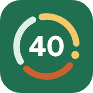

Kebijakan Privasi
Privacy Policy · Istiqamah 40 · Berlaku sejak 21 November 2026Istiqamah 40 adalah aplikasi web (PWA) untuk mencatat challenge 40 hari: shalat 40 rakaat, tilawah 1 juz, dan sedekah setiap hari. Halaman ini menjelaskan data apa yang digunakan dan bagaimana data itu disimpan.
1. Data yang disimpan
- Catatan ibadah (centang shalat, halaman tilawah, sedekah beserta jenis dan nominal opsional, catatan hati) dan pengaturan (bahasa, tema, kota, tanggal mulai, pengingat).
- Semua data ini hanya tersimpan di perangkat Anda (penyimpanan lokal browser). Data tidak dikirim ke server kami, dan kami tidak memiliki salinannya.
2. Login dengan Google (opsional)
- Jika Anda memilih masuk dengan Google, aplikasi menerima nama, alamat email, dan foto profil dari akun Google Anda.
- Informasi tersebut hanya dipakai untuk menampilkan nama dan foto di aplikasi, dan disimpan di perangkat Anda saja.
- Aplikasi tidak meminta akses ke Gmail, Drive, Kontak, atau data Google lainnya.
- Anda bisa memakai semua fitur tanpa akun Google (mode tamu), dan bisa keluar kapan saja lewat menu Profil.
3. Lokasi
Jika Anda menekan tombol GPS, koordinat lokasi dipakai untuk menghitung jadwal shalat di perangkat Anda. Koordinat tidak dikirim ke mana pun.
4. Layanan pihak ketiga
- GitHub Pages menyajikan berkas aplikasi. Seperti situs web pada umumnya, server hosting dapat mencatat alamat IP untuk keperluan keamanan dan operasional.
- Google Fonts menyediakan huruf aplikasi.
- Google Identity Services menangani proses login Google bila Anda memilihnya.
Kami tidak memakai iklan, pelacak analitik, atau cookie pemasaran, dan tidak menjual atau membagikan data Anda.
5. Mengelola dan menghapus data
Di menu Profil Anda dapat mencadangkan, memulihkan, atau menghapus semua data. Menghapus data situs di pengaturan browser juga akan menghapus seluruh catatan.
6. Perubahan kebijakan
Jika kebijakan ini berubah, tanggal di bagian atas halaman akan diperbarui.
7. Kontak
Pertanyaan atau masukan dapat disampaikan melalui halaman Issues di GitHub.
Istiqamah 40 is a web app (PWA) for tracking a 40-day challenge: 40 rak’ahs of prayer, one juz of Qur’an recitation, and charity every day. This page explains what data is used and how it is stored.
1. Data we store
- Your worship log (prayers marked as done, pages read, charity with optional type and amount, reflections) and your settings (language, theme, city, start date, reminders).
- All of this data is stored only on your device (your browser’s local storage). It is not sent to our servers, and we do not keep a copy.
2. Signing in with Google (optional)
- If you choose to sign in with Google, the app receives your name, email address, and profile photo from your Google account.
- This information is only used to show your name and photo in the app, and it is stored on your device only.
- The app does not request access to Gmail, Drive, Contacts, or any other Google data.
- You can use every feature without a Google account (guest mode), and you can sign out at any time from the Profile tab.
3. Location
If you tap the GPS button, your coordinates are used to calculate prayer times on your device. They are not sent anywhere.
4. Third-party services
- GitHub Pages serves the app’s files. Like most websites, the hosting server may log IP addresses for security and operational purposes.
- Google Fonts provides the app’s typefaces.
- Google Identity Services handles Google sign-in if you choose to use it.
We do not use advertising, analytics trackers, or marketing cookies, and we do not sell or share your data.
5. Managing and deleting your data
From the Profile tab you can back up, restore, or delete all data. Clearing this site’s data in your browser settings also removes your entire log.
6. Changes to this policy
If this policy changes, the date at the top of this page will be updated.
7. Contact
Questions or feedback can be sent through the GitHub Issues page.